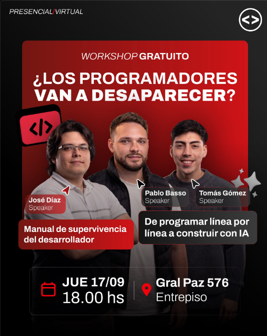

Workshop¿Los programadores van a desaparecer? Workshop gratuito sobre IA y desarrollo
La IA está cambiando la forma en que programamos. José Díaz, Tomás Gómez y Pablo Basso conversan sobre el presente y el futuro del desarrollo de software.
Ver más